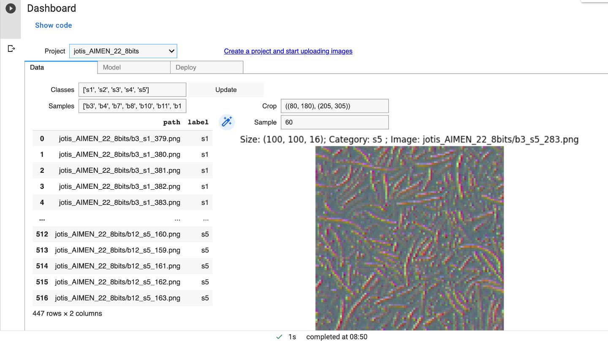

Hyperspectral image analysis from the start
SpectralEdge is designed to work seamlessly with HSI cameras of
different types, from snapshot mosaic cameras to line-scanning
cameras. With SpectralEdge, you can easily connect to your HSI
camera and start with your image analysis right away, without
the need to write a single line of code.
Get rid of complex and time-consuming software development tasks and
focus on your image analysis and classification setup. Read and store
images in any HSI format (ENVI, TIFF, Mosaic).

Filtering, redundancy analysis, visualization
Select and visualize any specific band or show the panchromatic
intensity for a first inspection of your hyperspectral datacubes.
Apply a PCA analysis and extract and analyze the redundancy in your
spectral bands to identify redundancy reduction opportunities.
Visualize the principal components of the spectral bands to unveil
spatio-spectral patterns in your images. Visualize a PCA-based
pseudocolor image to show the most important spectral information
in a single image.
Analyse your data with machine learning
SpectralEdge's powerful cloud-based machine learning capabilities
allow you to easily create, train, and validate models for image
analysis. You can upload images to the cloud, create a dataset,
and train an out-of-the-box model with just a few clicks using simple
ready-to-execute -yet fully customizable- Python notebooks.
Avoid writing code for feasibility studies. Cut time and effort dedicated
to the assessment of new applications. One day feasibility check since
sample availability.
Real-time analysis from the start
Once the model is trained and validated, you can easily deploy it back
to the SpectralEdge device and use it for real-time image analysis.
Harness the power of state-of-the-art machine learning and take HSI
analysis to the next level.
Protype and train models comfortably in notebooks from any device.
Run the validated models in real time in an industrial grade platform
designed for AI applications.
Factory-proven
The first SpectralEdge prototypes have already made a difference in
providing seamless solutions to actual industrial problems, by
breaking the barriers to hyperspectral imaging and classification.
HSI guides
With just the right mix of embedded hardware and software, cloud API and web
interface, SpectralEdge is the ideal complement to smooth the assessment,
development and deployment of solutions based on hyperspectral
image analysis. To help you navigate the HSI landscape and focus on your
application we have prepared some quick guides.